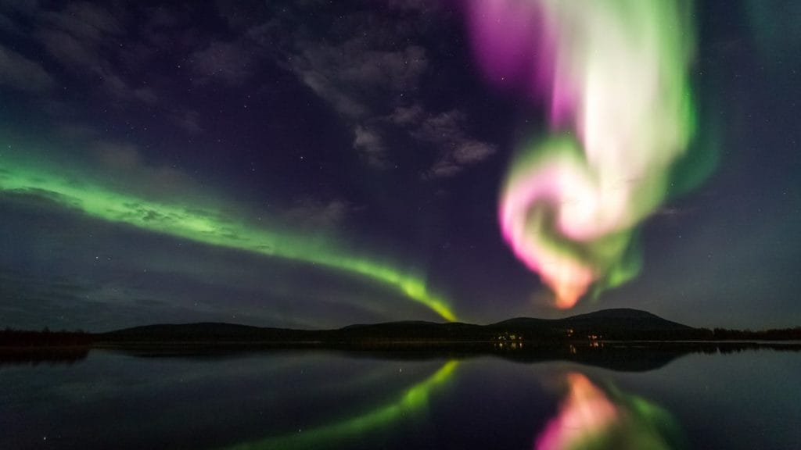
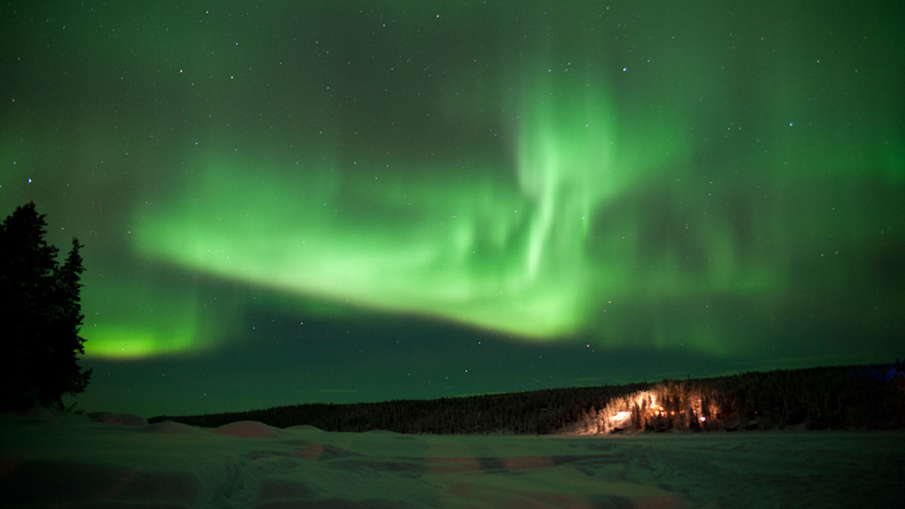
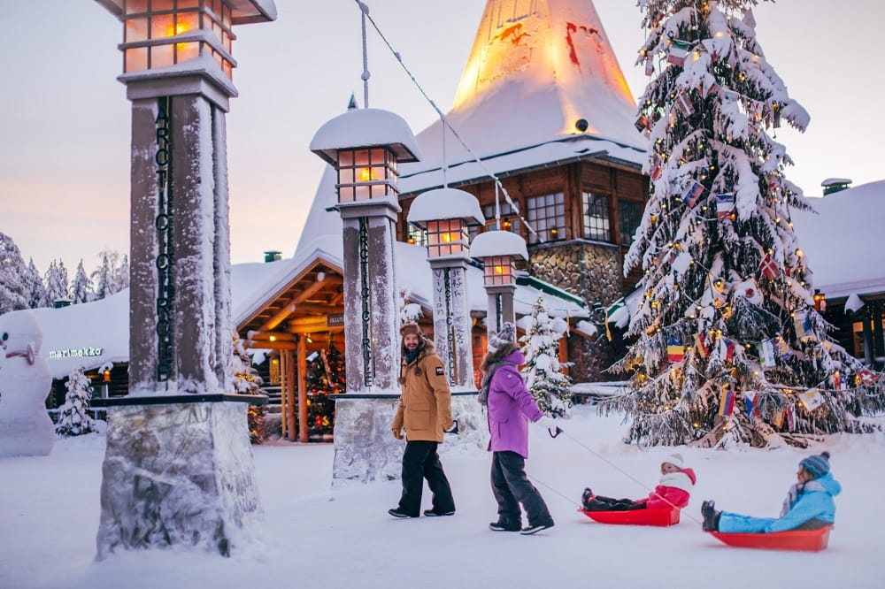
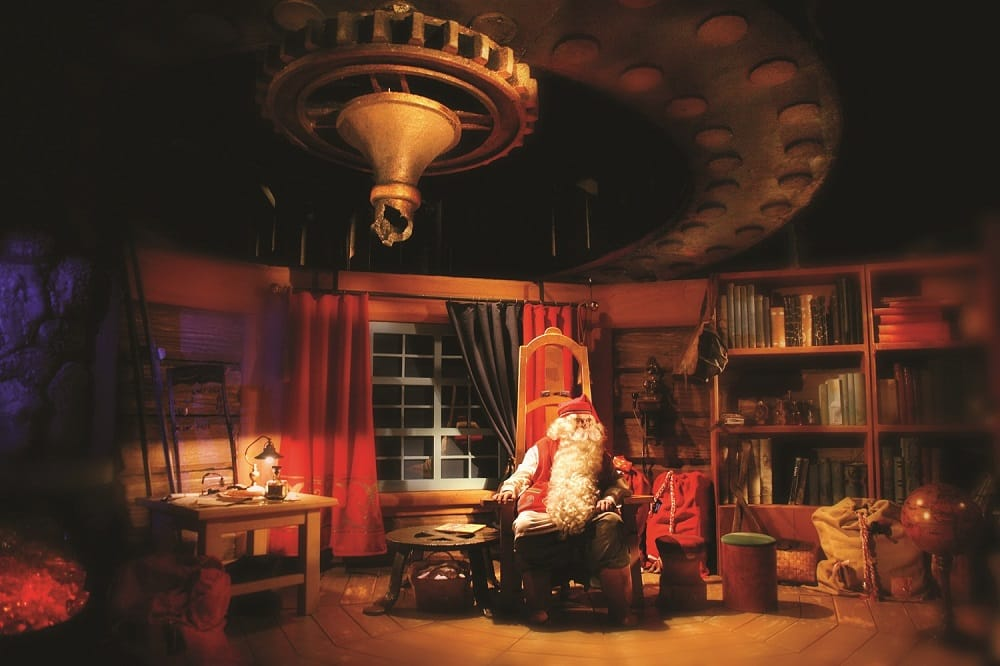
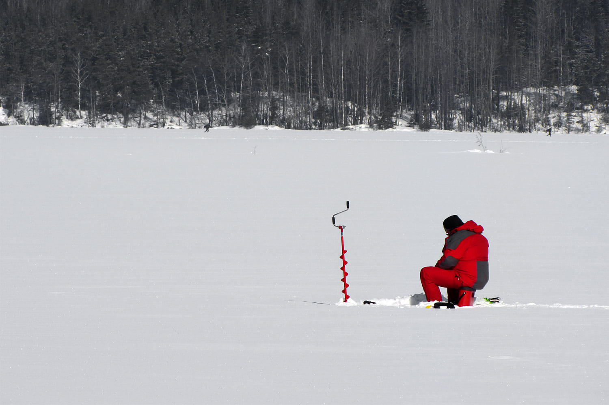
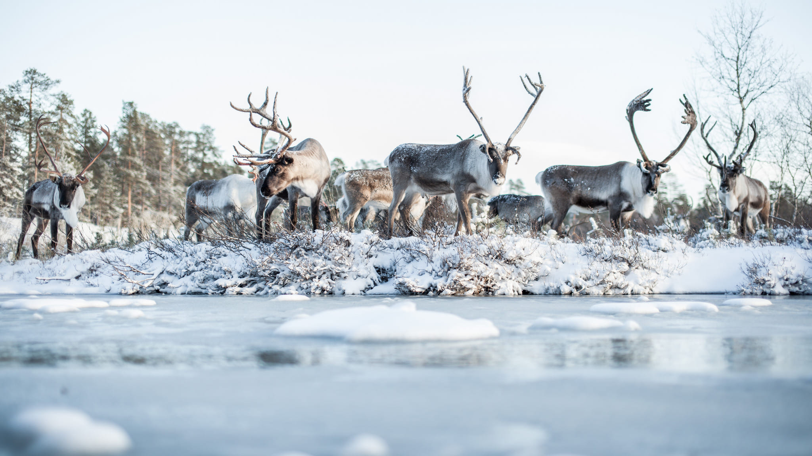
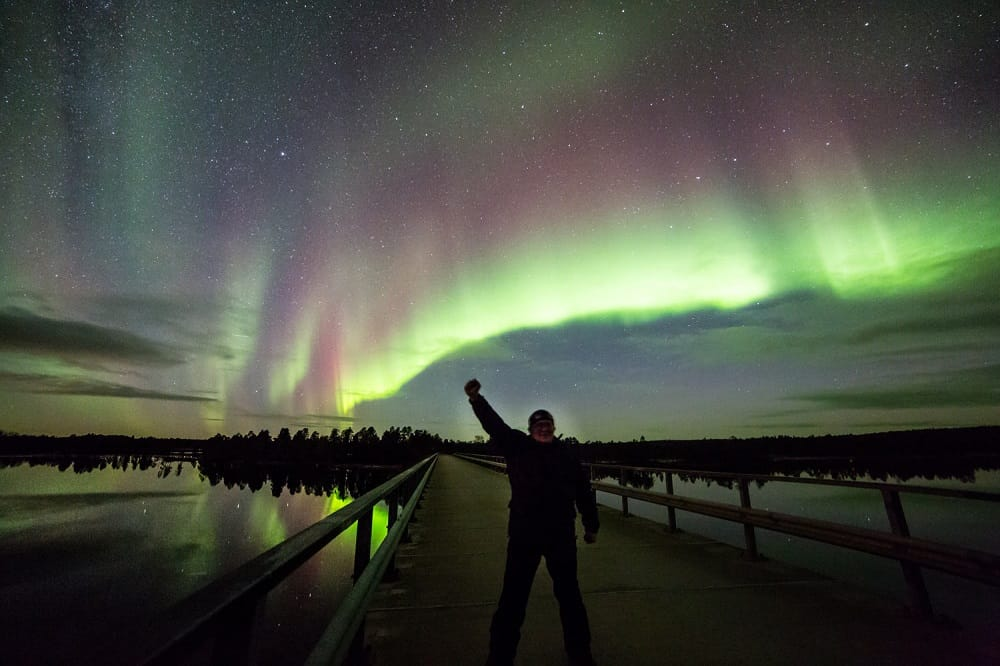

NORDIC UNIQUE TRAVELS ‧ 冬季多天遊
夢幻祕境
芬蘭拉普蘭 7 天遊
芬蘭拉普蘭 7 天遊
極光 ‧ 馴鹿 ‧ 聖誕老人的故鄉——走進北極圈的冬季童話
赫爾辛基 ‧ 羅瓦涅米 ‧ 北極圈

OVERVIEW ‧ 行程總覽
七天六夜・北極圈的冬季童話
DAY 1 ‧ 赫爾辛基
城市漫遊・夜臥火車北上

DAY 2 ‧ 羅瓦涅米
聖誕老人村・跨越北極圈

DAY 2 ‧ 聖誕老人村
與聖誕老人本尊相見
DAY 3 ‧ 極地活動日
雪鞋健行・原始森林

DAY 3 ‧ 極地活動日
冰釣・篝火・守候極光
DAY 4–5 ‧ 拉努阿 & 市區
拉努阿動物園・北極熊

DAY 6 ‧ 馴鹿農場
馴鹿雪橇・薩米文化
DAY 7 ‧ 哈士奇農場
哈士奇雪橇・林間飛馳

DAY 7 ‧ 夜
狩獵北極光

這個冬天，北極圈見
大人 €1,999 ‧ 小孩 €1,749 ‧ 最少 4 人成團 ‧ 含 5 晚住宿與全部活動門票 ‧ booking@nordictravels.eu
0:00 / 0:00
場景 1